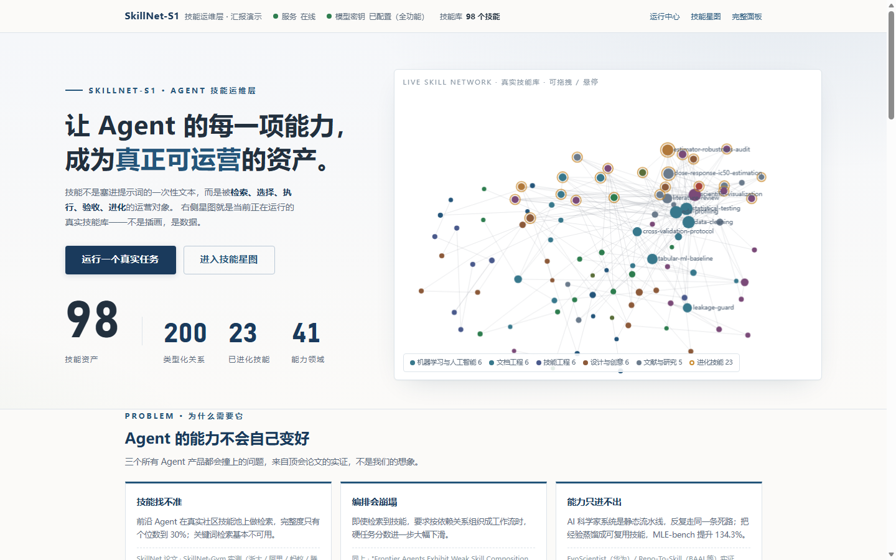
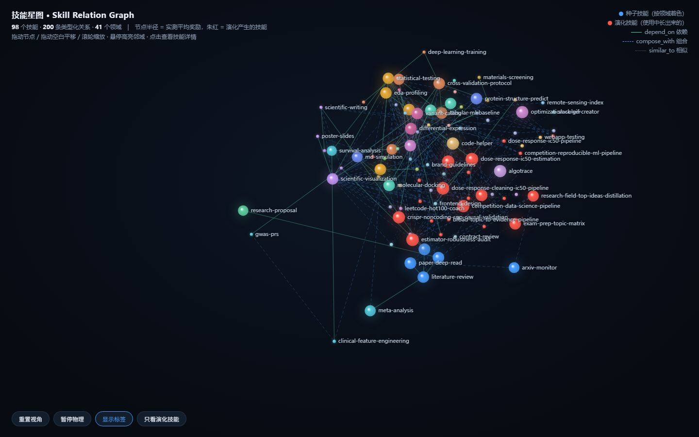

SKILLNET-S1 · 技术交付报告
让 Agent 的每一项能力，
成为真正可运营的资产。
技能运维层：发现 → 选择 → 关系编排 → 真实执行 → 修复 → 程序化验收 → 产物 → 反馈 → 进化，全过程可追溯。
本报告：结论 / 证据 / 落地路径 / 局限（约 4 页）
可运行 Demo：解压后双击 start.bat，浏览器自动打开
复现材料：requirements.txt · 快速开始.txt · 基准数据 JSON · 截图包 · 测试套件
交付日期 2026-10-02 · 版本 git 1b58b9f ·
当前库 100 技能 / 200+ 关系边 / 25 演化（随每次运行自动增长，实时以接口 /api/health 为准）
测试 pytest 35/35 ×3 全绿（不联网、确定性）· 交付自检 31/31 · 自检 18/18
模型 deepseek-chat（可配置；未配密钥时浏览/检索/星图/导出功能完整可用）
1 · 结论摘要（一页讲完）
做了什么：把「Agent 技能」从散落的提示词文本，变成一套有检索、有编排、真执行、可验收、能进化的资产体系，
并以可运行 Demo 完整呈现。技能库 100 项 / 200 余条类型化关系边（其中 25 项由系统自主演化产生，随运行持续增长）。
关键数字（全部来自当前库实测，manifest 锁定 git commit 与库哈希）：
- 检索：dev 集 Recall@5 = BM25 0.725 → Hybrid 0.742 → Fabric（图扩展）0.825；heldout 上 Hybrid 最优 0.708
- 执行：3 步真实任务端到端 153s / ¥0.065，其中一次真实失败经 3 次尝试自动修复成功
- 编排：技能依赖关系图驱动执行顺序（DAG = Runtime），无依赖步骤真并行，关键路径自动计算
- 工程：35 项自动化测试连续 3 轮全绿，单元测试零联网、零真实 API 依赖，套件 2.9 秒
三个关键发现（含负面，不包装）：
- 图扩展能补回关键词检索漏掉的技能（dev +10pp），但引入 84–95% 噪声——这正是生产链路配 LLM 重排与置信度分流的原因；heldout 上纯图扩展不敌混合检索。
- 在简单单步任务上，三种技能使用模式（不给技能 / 提示词塞技能 / 契约模式）全部 100% 成功，契约模式成本最高——技能资产的价值要在更难的任务上才会显现，简单任务是天花板。
- LLM 等待占执行时延 ≈81%：瓶颈在模型而非框架；系统已把每次调用的角色、耗时、成本记账到请求级账本。
建议：以 Phase 1「只读接入」（业务 Agent 调 /api/search 注入技能）起步，1–2 周可出对比数据；随后按第 6 章路径推进。
2 · 背景与问题
SkillNet 论文（浙大/阿里/蚂蚁/腾讯，arXiv 2603.04448）实测：前沿 Agent 在真实社区技能池上检索完整度仅个位数到 30%，按依赖编排硬任务时分数进一步大幅下滑；EvoScientist（华为）指出静态流水线「技能只进不出」。即：模型能力在涨，但「技能怎么被管理」缺一层基础设施。本项目在该论文的方向上补齐其缺失的后半段：技能的选择策略（LinUCB）、产物验收、成本记账与进化治理。
3 · 系统设计与架构
- 技能资产层：98 技能（科研方法 + 工具交付 + 演化），每项含契约字段（能力/输入输出/陷阱/验收方式），符合 agentskills.io 规范，可一键导出 Claude Code / Cursor / Gemini / AGENTS 四种格式。
- 检索层：BM25 / 混合 / Fabric（关系图扩展 + LLM 重排）三档同题对照，图扩展沿类型化关系边补漏。
- 编排与执行层：编排器输出技能依赖边作为权威执行图；调度器按 DAG 并行派发、产物跨步传播、上游失败阻断下游；每步真实沙箱执行 Python。
- 验收层：L1 确定性检查（文件/表头/JSON/数值范围）→ L2 技能断言 → L3 语义评审，三层证据分开呈现，绝不说谎为"客观验证"。
- 进化层：蒸馏/变异/交叉/再生四算子 + 质量准入闸（当前 23 项演化技能即由此产生）。

首页：Hero + 真实数据技能星图（浅色产品面）

技能星图：深色沉浸模式，红圈为演化技能
4 · 实验与结果
4.1 检索（Experiment A，当前库 manifest 锁定）
| Recall@5 | dev（n=20） | heldout（n=12） |
|---|
| BM25 | 0.725 | 0.653 |
| Hybrid（向量+关键词） | 0.742 | 0.708 |
| Fabric（图扩展，纯图无重排） | 0.825 | 0.667 |
Fabric 相对 BM25 的补回质量：dev 补入 44 个技能位中 7 个相关 / 37 个噪声（精度 16%）；heldout 1 相关 / 18 噪声（5%）。结论：图扩展补真金但噪声大，必须配合重排与置信度分流。
4.2 技能使用模式（Experiment B，5 任务 × 3 模式 × 真实执行）
| 模式 | 成功率 | 平均尝试 | 自动修复率 | 验收通过均值 | 成本/次 | 时延 |
|---|
| none（不给技能） | 100% | 1.4 | 40% | 17.8 | ¥0.143 | 14.7s |
| prompt（文本塞提示词） | 100% | 1.0 | 0% | 20.2 | ¥0.157 | 14.3s |
| contract（技能契约） | 100% | 1.2 | 20% | 17.6 | ¥0.200 | 17.6s |
诚实结论（天花板效应）：简单单步任务上三种模式全部成功，契约模式反而最贵——本样本不支持「契约模式更好」；其价值（陷阱规避、逐条验收证据）需在更难的多步任务上验证。51 技能时代的历史实验（契约模式信息量 2217 vs 1285/1510 字）已标注 Historical，不冒充当前结论。
4.3 端到端真实运行样例（证据）
任务「剂量-存活率数据清洗与剂量-反应分析」：3 步 DAG（数据清洗 → 剂量反应估计 ∥ EDA），其中剂量反应估计第 1、2 次执行失败（真实数据类型错误），第 3 次自动修复成功；总耗时 153s、成本 ¥0.065、关键路径 138.1s 恰好穿过修复链。运行记录、事件流、产物哈希全部落盘可查（out/runs/）。
5 · 五个产品 Moment（Demo 演示主线）
- 技能网络激活——输入任务，真实候选技能在星图上点亮，无关节点降权
- 网络收束成 DAG——同一批节点平滑迁移为执行流程图，视觉上直接理解"流程从技能网络中组织出来"
- 真实执行与修复——节点真实跑代码；失败不隐藏，展示尝试/修复全过程
- 证据——L1/L2/L3 三层验收分层呈现，通过率与明细可展开
- 反馈与进化——运行结束展示技能蒸馏准入结果，星图中进化技能带标记
- Agent 最终回复——整条流程跑完后，Agent 生成一段「答案 + 证据」双层结构的自然语言回复：
① 直接回答（主体）：用运行中真实产出的内容摘录（CSV 内容、执行输出）把用户的问题本身讲清楚，
解释类任务完整讲知识、分析类任务给出结论与不确定性；② 执行与证据：每步结果、验收、
失败-修复与产物清单；③ 下一步建议。由真实 LLM 生成、明确禁止编造数字与文献，
失败与跳过如实写入。实测（"解释费马大定理"任务）：回复 1960 字，含费马大定理精确陈述、
前提边界分析、证明史对照表、1993/1995 完整性节点区分与三个常见混淆澄清，
并如实报告第 2 步曾失败一次后自动修复
- Agent 最终回复——整条流程跑完后，Agent 生成一段「答案 + 证据」双层结构的自然语言回复：
① 直接回答（主体）：用运行中真实产出的内容摘录（CSV 内容、执行输出）把用户的问题本身讲清楚，
解释类任务完整讲知识、分析类任务给出结论与不确定性；② 执行与证据：每步结果、验收、
失败-修复与产物清单；③ 下一步建议。由真实 LLM 生成、明确禁止编造数字与文献，
失败与跳过如实写入。实测（"解释费马大定理"任务）：回复 1960 字，含费马大定理精确陈述、
前提边界分析、证明史对照表、1993/1995 完整性节点区分与三个常见混淆澄清，
并如实报告第 2 步曾失败一次后自动修复
- Agent 最终回复——整条流程跑完后，Agent 基于**真实运行事实**（每步状态与尝试、
产物清单、验收通过率、成本与关键路径、技能沉淀）生成一段自然语言总结回复：
完成了什么、遇到问题如何修复、交付了什么、下一步建议。回复由真实 LLM 生成、
明确禁止编造数字；失败与跳过如实写入，不粉饰
6 · 落地路径（建议）
| 阶段 | 内容 | 周期 / 风险 |
|---|
| Phase 1 · 只读接入 | 业务 Agent 调 /api/search 获取技能（含降级说明），零写入；建立 10–20 条业务任务对照集，跑「有无技能」对比 | 1–2 周 / 低（只读无侵入） |
| Phase 2 · 反馈回流 | 业务执行结果回传为奖励，LinUCB 开始按业务分布排序；建立业务 heldout 治理 | 2–4 周 / 中（需标注少量 gold） |
| Phase 3 · 进化治理 | 候选技能人工审批门 + 回滚；蒸馏业务高频轨迹为新技能 | 1–2 月 / 中（治理流程需产品化） |
7 · 局限与下一步（诚实声明）
- 技能使用模式实验样本仅 5 个单步任务（天花板效应），需扩 heldout 与多步任务；Evolution / LinUCB 显著性实验未在当前库完成。
- L3 语义评审为同模型自评（界面已明示"语义评审"），异模型 judge 未接入。
- 沙箱面向可信代码，不是对抗性隔离环境。
- 运行时延以 LLM 等待为主（≈81%），已按调用记账，优化方向是异步化与缓存而非框架。
- 结构化日志（字段化 run_id/step_id）尚未完成，排障暂靠文本日志 + 事件流。
附录 A · 复现方式
- 解压后双击
start.bat（Windows）或执行 ./start.sh（macOS/Linux）——自动选解释器、装依赖、起服务、开浏览器
- 无密钥即可体验：技能库 / 三档检索对照 / 技能星图 / 实验面板 / 跨框架导出
- 填密钥（
.env 的 DEEPSEEK_API_KEY）后解锁：真实任务执行、修复循环、验收、进化、全链路演示
- 验证测试：
python -m pytest tests/ -q（预期 35 passed，约 3 秒，不联网）
- 复现基准：
python tools/bench_current_library.py（检索，零 API 成本）、python tools/eval_skill_usage.py 5（技能使用，消耗少量 API 额度）
基准原始数据见 out/bench/*.json（含 manifest：git commit / 库哈希 / 数据集哈希）；截图见 out/final_shots/；完整迭代过程见 docs/rebuild-log.md。